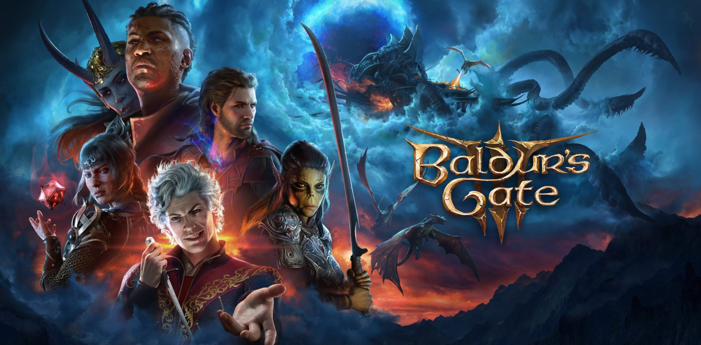

Baldur's Gate 3
Experimenta el regreso esperado de la querida saga RPG con Baldur's Gate 3. Desarrollado por Larian Studios, creadores de Divinity: Original Sin, este RPG de fantasía te sumerge en un mundo épico. Enfrenta la amenaza de los Azotamentes, crea tu aventurero con 12 clases y 46 subclases, y elige entre cientos de hechizos y habilidades únicas. Baldur's Gate 3 ofrece una experiencia de rol inmersiva, capturando la esencia de las clásicas partidas de tablero y dados en PC y PS5.